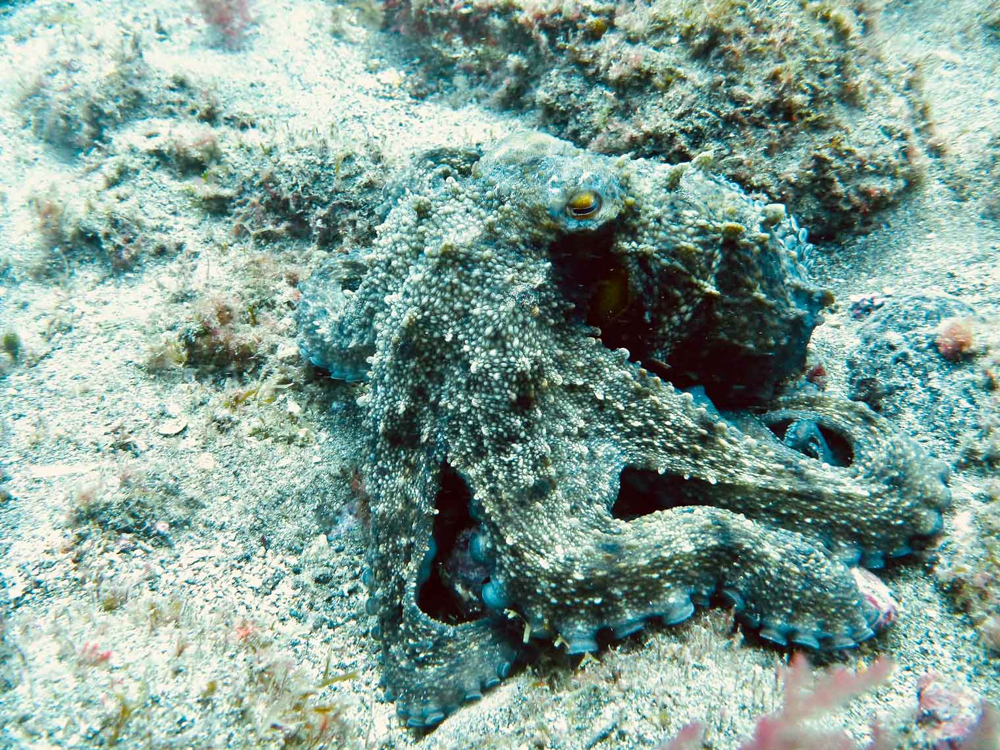

MirkoFriebe

2016 | Spain
Gran Canaria
Excellent Scuba Diving, just off the coast of the small fishing village Sardina del Norte. Here you are at the rural, and traditional part, of otherwise quite touristy Gran Canaria.
Expect easy shore entries, which will take you into the great Bay, that surrounds the village, giving it perfect protection from strong winds, currents, and high waves. The Dive Sites make perfect locations to enjoy the Marine Life rich waters of the Atlantic Ocean. Expect to see countless invertebrates, cold water coral reefs, and a diverse fish population. Rays and sometimes sharks are seen here, most frequently the Angel Shark, a shark typical for the Canary Islands Archipelago.
www.buceonorte.com


“Natural science will in time incorporate into itself the science of man, just as the science of man will incorporate into itself natural science: there will be one science.”
Karl Marx
Cras dapibus. Vivamus elementum semper nisi. Aenean vulputate eleifend tellus. Aenean leo ligula, porttitor eu, consequat vitae, eleifend ac, enim. Aliquam lorem ante, dapibus in, viverra quis, feugiat a, tellus.